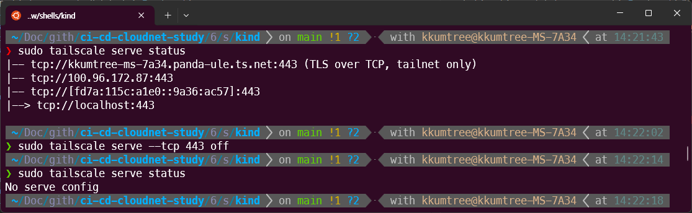
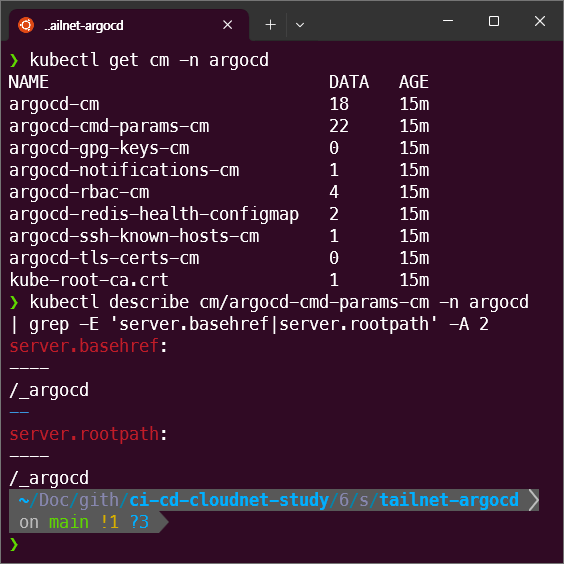
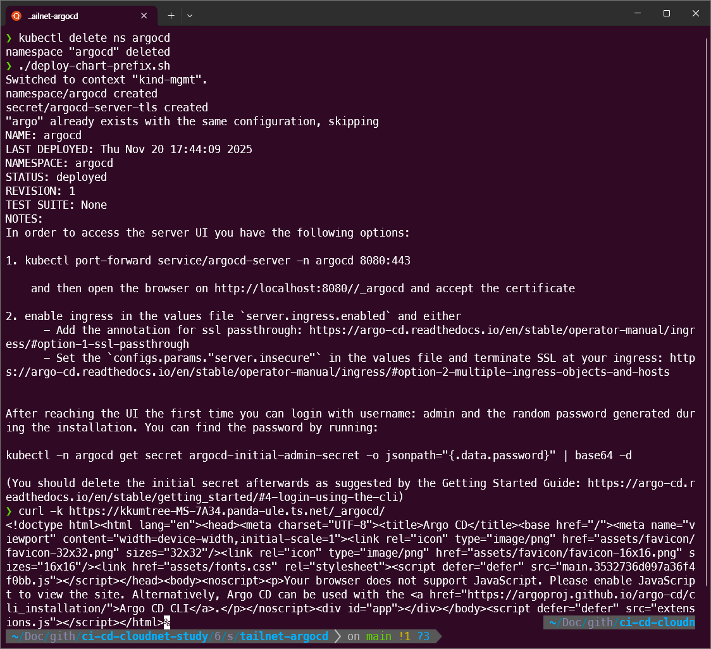

CloudNet@에서 진행하고 있는 CI/CD Study 6주차에는 ArgoCD를 마지막으로 다루었습니다.
Cluster를 추가해보고 Gitea를 붙이기 전에, ArgoCD를 Prefix로 라우팅하려고 했는데 로그아웃하고 나서 원치않는 경로로 빠지는 바람에
이것저것 살펴보고 수정을 하여 원하는 대로 구동되도록 셋업했습니다.
0. 실습 준비
해당 구성들은 아래 GitHub에 탑재되어 있습니다.
https://github.com/kkumtree/ci-cd-cloudnet-study 의 6w 폴더
이전 포스팅 Tailscale을 타고, ArgoCD에 접근해보기을 하였다면, 리소스 정리를 합니다.
kind 배포 시, 포트 점유로 오류가 발생합니다.
sudo tailscale serve --tcp 443 off

이후 실습을 위한 배포를 합니다.
(1) kind 클러스터 배포
이번 실습에서는 k8s 다중 클러스터 환경에서의 ArgoCD를 다루기에,
총 3개의 클러스터를 배포합니다.
(6w/shells/kind/)
- up-kind-mgmt.sh 실행
- kind 클러스터, mgmt 생성
- ingress-nginx 배포
- ingress-nginx에 SSL passthrough 활성화
- up-kind-dev-prd.sh 실행
- kind 클러스터, dev 생성
- kind 클러스터, prd 생성


이후 아래 3개의 context를 확인할 수 있습니다.
(kubectl config get-contexts, k9s의 경우 :ctx)
- kind-mgmt / kind-prd / kind-dev

(2) ArgoCD 배포(mgmt)
Tailscale 연동이 재밌었기 때문에, 이번엔 이쪽[sol.2]으로 합니다.
[sol.1] /etc/hosts 파일을 변경하여 접근하도록 하는 방법
(6w/shells/argocd/)
9-create-local-tls.sh실행deploy-chart.sh실행kind-mgmt로 context 전환- ArgoCD 배포
아래처럼
/etc/hosts파일도 수정하여, 임의의 도메인을 추가합니다.
# (Mac/Linux)
echo "127.0.0.1 argocd.example.com" | sudo tee -a /etc/hosts
cat /etc/hosts
# (Windows)
# C:\Windows\System32\drivers\etc\hosts 관리자모드에서 메모장에 내용 추가
# 127.0.0.1 argocd.example.com

[sol.2] Tailscale 로 접근하도록 하는 방법
이전 포스팅 Tailscale을 타고, ArgoCD에 접근해보기을 참고하여 각자의 DNS로 변경 후 실행합니다.
(6w/shells/tailnet-argocd)
- tailnet에 등록된 해당 hostname 확인: 두 번째 값
tailscale status | head -n 1 - tailnet DNS 확인:
Search Domains:의 항목 확인
sudo tailscale dns status create-local-tls.sh파일을 확인된 값으로 변경 후, 실행deploy-chart.sh파일을 확인된 값으로 변경 후, 실행kind-mgmt로 context 전환- ArgoCD 배포

이후에 아래 커맨드로 Tailscale serve를 활성화 합니다.
sudo tailscale serve --bg --tcp 443 tcp://localhost:443
(3) ArgoCD 초기 패스워드 변경
ArgoCD 권장 사항으로 패스워드 변경 후, 초기 패스워드는 제거합니다.
ARGOPW=$(kubectl -n argocd get secret argocd-initial-admin-secret -o jsonpath="{.data.password}" | base64 -d ;echo)
# argocd login argocd.example.com --insecure --username admin --password $ARGOPW
argocd login kkumtree-ms-7a34.panda-ule.ts.net --insecure --username admin --password $ARGOPW
# 사용자 지정 패스워드로 변경
argocd account update-password --current-password $ARGOPW --new-password kkumtree
# (권장) 초기 비밀번호 제거
kubectl delete secret argocd-initial-admin-secret -n argocd

이후, 변경된 패스워드로 로그인을 확인합니다.

1. ArgoCD 클러스터 관리
ArgoCD가 배포된 클러스터 외의 클러스터들은 별도로 ArgoCD에 등록하여야합니다.
이에 앞서, kind를 위한 설정과 Alias 등록을 해두겠습니다.
(1) kind를 위한 설정 및 Alias 등록
kind는 Docker위에서 구동되는 것이기에,
kind가 사용중인 Docker 네트워크와 Docker 포트포워딩 정보를 확인해야합니다.
실습 환경 별로, 사용 중인 네트워크 정보는 달라질 수 있습니다.
또한 호스트 재부팅 시 각 Docker Network내 IP가 변경될 수 있으니, 확인하여 변경하여야 합니다.
6443 포트를 사용하고 있고 네트워크는 172.16.0.0/16 대역을 사용 중인 것을 확인하였습니다.
docker ps
docker network inspect kind | grep -E 'Name|IPv4Address'

이후, 각 cluster별로 확인된 IP주소로 변경합니다. (vi ~/.kube/config)

alias kctx-mgmt='kubectl --context kind-mgmt'
alias kctx-dev='kubectl --context kind-dev'
alias kctx-prd='kubectl --context kind-prd'
(2) 클러스터 등록
아래 커맨드를 입력한 다음, y로 승인하여 등록 절차를 밟습니다.
argocd cluster add kind-dev --name dev-k8s
argocd cluster add kind-prd --name prd-k8s

등록이 되었는지 확인해봅니다.
클러스터의 자격증명은 argocd.argoproj.io/secret-type=cluster과 함께 시크릿으로 저장됩니다.
kubectl get secret -n argocd -l argocd.argoproj.io/secret-type=cluster
argocd cluster list

2. ArgoCD Prefix 재적용
Gitea도 같이 띄우기 위해서, ArgoCD 진입점을 Prefix /_argocd 로 변경을 해보겠습니다.
추가로 설정한 값은 아래와 같습니다.
특히, 로그아웃 시 지정한 Prefix로 리디렉션되지 않아 configs.cm.url을 사용자 정의했습니다.
추정컨대, SSO 설정을 하려면 필수적으로 필요한 값이라 로직상 사소한 버그는 놔둔 것으로 보입니다.

configs.params.server.basehref: "/<Prefix>" # Reverse Proxy 사용 시, 하위 경로가 다를 때 사용. 웹콘솔의 index.html 경로 정의
configs.params.server.rootpath: <Prefix>/ # Reverse Proxy 사용 시, 하위 경로가 다를 때 사용.
configs.cm.url: "https://<DOMAIN>/<Prefix>" # Logout 시, ArgoCD 메인페이지로 가지 못하는 이슈가 있어, 수동으로 지정
server.ingress.path: /</Prefix>/ # 마지막에 `/` 추가하지 않으면 에러발생 확인.
server.ingress.pathType: Prefix # ImplementationSpecific로 할 경우, Prefix 뿐만이 아니고 Domain 최상위 경로도 점유하는 것으로 확인
configs 네임스페이스에 정의된 사항은 ConfigMap argocd-cmd-parmas-cm 과 argocd-cm 에서 확인할 수 있습니다.
kubectl get cm -n argocd
kubectl describe cm/argocd-cmd-params-cm -n argocd | grep -E 'server.basehref|server.rootpath' -A 2

- 네임스페이스 argocd 제거
deploy-chart-prefix.sh실행 (로컬 TLS 인증서 없는 경우, 생성 후 진행)- 명령어로 지정한 Prefix로 정상 접근되는 지 점검: Prefix 마지막에
/추가 - 이후, 로그인 재설정 및 클러스터 재등록을 진행했습니다.
하지만, 네임스페이스를 지우면 TLS 인증서와 cluster 등록을 반복했어야 해서
디버깅 중에는 helm 업그레이드로 진행했습니다.
helm upgrade argocd -n argocd argo/argo-cd --values argocd-values-tailnet-prefix.yaml
아래 명령어로 정상 접근되는지 확인합니다.
# curl -k https://<DOMAIN>/<Prefix>/
curl -k https://kkumtree-MS-7A34.panda-ule.ts.net/_argocd/

로그인 시에는 다음과 같이 --grpc-web-root-path /<Prefix> 파라미터를 추가하여 접속합니다.
# ARGOPW=$(kubectl -n argocd get secret argocd-initial-admin-secret -o jsonpath="{.data.password}" | base64 -d ;echo)
argocd login kkumtree-ms-7a34.panda-ule.ts.net --grpc-web-root-path /_argocd --insecure --username admin --password $ARGOPW
# argocd account update-password --current-password $ARGOPW --new-password kkumtree
argocd login kkumtree-ms-7a34.panda-ule.ts.net --grpc-web-root-path /_argocd --insecure --username admin --password kkumtree
# kubectl delete secret argocd-initial-admin-secret -n argocd

9. Host 재부팅 시, Unhandled Error

재부팅 후 kubectl 명령어 입력 시 kind 클러스터, 즉 Docker pod의 Docker network 상의 IP주소가 변경되므로 1-(1) kind를 위한 설정 및 Alias 등록을 참조하여 ~/.kube/config 설정을 업데이트 합니다.
더불어 ArgoCD 클러스터도 재등록 해야합니다.
- 기존 클러스터 제거:
argocd cluster rm <CLUSTER NAME>

Reference

kkumtree
Source code on GitHub
© 2025 kkumtree and contributors All rights reserved.
Licensed under
CC BY-NC-ND 4.0